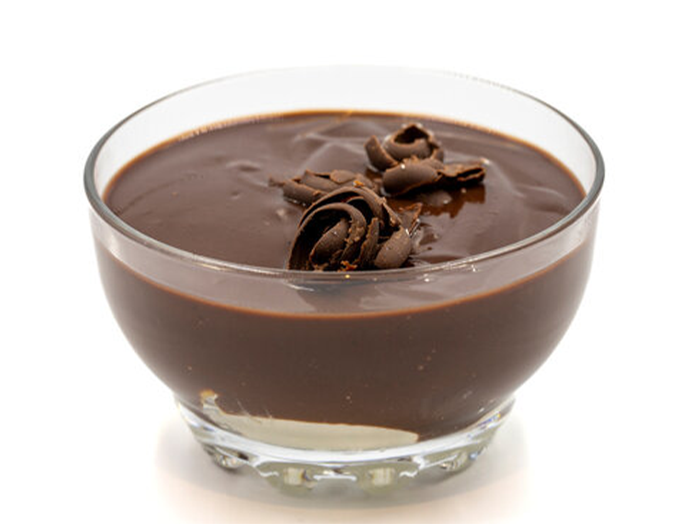

Svart Pudding
- 60 g ljust farinsocker
- 1/2 dl instant espressopulver
- 3 matskedar holländskt kakaopulver
- 3 matskedar potatismjöl
- 1/2 tsk koshersalt
- 3 äggulor
- 1,2 dl vispgrädde
- 6 dl helmjölk
- 60 g osaltat smör
- 1½ tsk vaniljextrakt
- 1 matsked kaffilikörer (som Kahlúa)
- 2 teskedar konjak eller brandy
- Chokladspån för garnering
- Vispgrädde för servering (valfritt)
I en stor kastrull, vispa ihop farinsocker, espressopulver, kakaopulver och salt. Krossa eventuella klumpar av farinsocker medan du vispar. Tillsätt äggulor, grädde och mjölk, och vispa hela tiden tills blandningen är jämn och slät. Ställ kastrullen på medelvärme och laga under ständig vispning tills blandningen tjocknar och bubblar, ca 8-10 minuter. Ta sedan av från värmen och fortsätt laga i ytterligare 1 minut. Ta bort från värmen och rör ner vanilj, kaffilikörer, konjak och smör. Vispa tills smöret har smält helt. Placera en fin sil över en skål. Häll pudding-blandningen genom silen och använd en flexibel slickepott för att blanda försiktigt. Täck ytan direkt med ett parchmentpapper eller plastfolie. Kyl ner i kylskåp tills den är kall och stelnad, minst 4 timmar eller upp till 12 timmar. Servera genom att göra pudingen len och toppa med chokladspån och vispad grädde, om så önskas. Varning: Detta härliga öl-pudding (som du inte vill veta av, enligt dvärgarna) är en underbar mörkrumsätande läckerhet som till och med de mest urskiljande dvärgiska gommarna säkerställer. Denna dessert är känd för att hålla dvärgarna vakna till de små timmarna. Ät den innan den äter dig!
